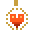
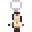
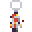
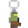
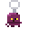
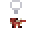
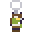
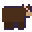
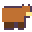

Boss trophies
Bosses drop keychains. Clip one to your belt (in the bag: Clip to your belt) and you have its ability while it hangs there, one keychain at a time. A keychain also fits in a trophy case, and a workbench turns one into a plaque for a back wall. The only stuffed animals are Wimbly and Teddy: set one on a bed, or hold it at your side, for its bonus.
| Keepsake | Dropped by | Bonus | |
|---|---|---|---|
 | Archmage keychain | The Archmage | On your belt: 10% more maximum mana |
| Magma Wizard keychain | The Magma Wizard | On your belt: fire and lava hurt you 10% less | |
 | Sky Ranger keychain | The Sky Ranger | On your belt: your arrows, bolts and magic hit 10% harder |
 | Magma Knight keychain | The Magma Knight | On your belt: 10% more defense |
 | Grukk keychain | Grukk the Ogre King | On your belt: your melee blows hit 10% harder |
 | Kraken keychain | The Kraken | On your belt: fish bite 10% sooner |
 | Vorthax keychain | Vorthax | On your belt: you deal 10% more damage |
 | Ograk keychain | The Goblin Beastmaster (Ograk Norlock) | On your belt: your soldiers hit 10% harder |
 | Stuffed Wimbly | The Goblin Beastmaster's bear, Wimbly | On a bed or at your side: your tamed animals hit 10% harder |
 | Stuffed Teddy | Teddy, a giant honey-colored bear who settles in the far forest the morning after Wimbly falls | On a bed or at your side: 10% more maximum health |